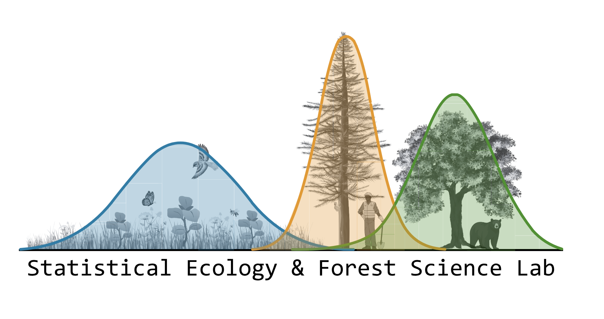
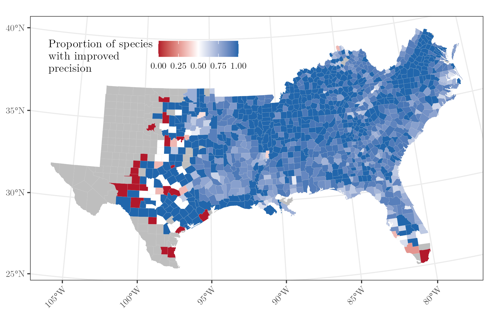
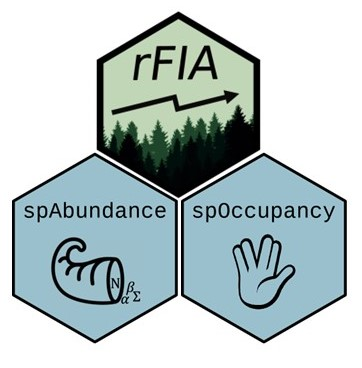
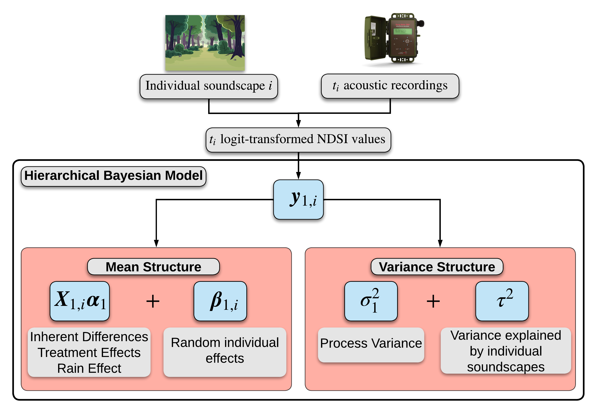
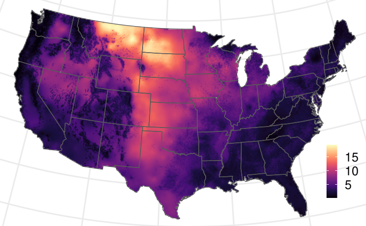
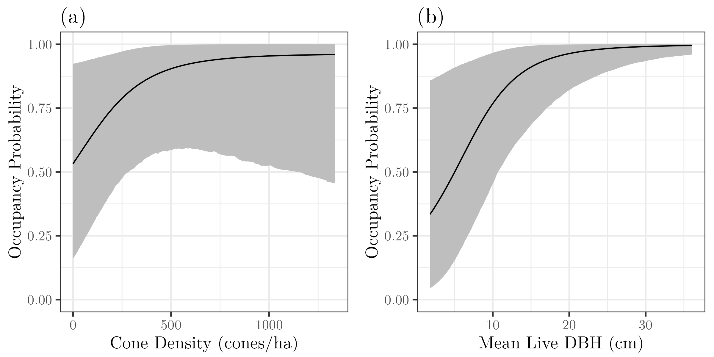

Statistical Ecology and Forest Science Lab

The Statistical Ecology and Forest Science (SEFS) Lab is led by Jeff Doser in the Department of Forestry and Environmental Resources at North Carolina State University. The lab develops state-of-the-art statistical models and open-source software tools to inform forest and wildlife management and conservation objectives. All of our code and software is freely available on the lab's GitHub organization.
Research
Past and ongoing research themes in the lab

Statistical advances in forest modeling
Forest management and production increasingly require estimates of forest variables at fine spatial resolutions. National Forest Inventory (NFI) data provide a robust resource to inform local management objectives, yet classical approaches are not well-suited to do so. We develop advanced statistical frameworks for leveraging NFI data to provide insights on forest parameters at management-relevant scales.

Natural resources software development
Effective forest and wildlife management requires user-friendly software that makes state-of-the-art statistical tools and data products accessible to natural resource managers, foresters, wildlife professionals, and conservation practitioners. A key pillar of the lab's research is developing computationally-efficient and accessible software to inform natural resource management and conservation.

Using autonomous monitoring systems to inform forest and wildlife management
Autonomous monitoring systems such as LiDAR, acoustic recording units, camera traps, and other remote sensing methods can provide massive amounts of data to inform forest and wildlife management, yet analyzing these data presents novel computational complexities. We develop quantitative approaches to leverage these complex data to inform a variety of forest and wildlife management objectives.

Developing statistical models to understand ecological processes across macroscales
Understanding the drivers of species distributions, forest resources, and biodiversity at macroscales is complicated by a variety of ecological and observational complexities, such as spatial autocorrelation, nonstationarity in species-environment relationships, and species interactions. We account for these complexities to provide a more complete understanding of macroscale ecological processes and inform effective monitoring and conservation approaches across spatial scales.

Hierarchical modeling applications
The Statistical Ecology and Forest Science Lab works closely with colleagues across the world to apply our modeling developments to different management, conservation, and ecological questions.
News

SEFS Lab goes to IALE 2026!
Alexa, Darius, and Michelle all presented their research at IALE 2026 in Athens, Georgia! Alexa gave a poster on in-progress work exploring forest management and herp communities in the North Carolina Piedmont, while Darius gave a poster on an in-progress project exploring the use of Bayesian statistics in forest growth and yield models.

New paper in JAE on spatially varying anuran trends
Check out our new paper showcasing a new method for estimating spatially varying occupancy trends within spOccupancy. We apply the framework to inform monitoring and conservation assessments of 11 anuran species in Minnesota, USA.

New guidelines paper on data integration
A new paper led by Ben Goldstein provides guidance to practitioners on when to use data integration for a species distribution modeling application.